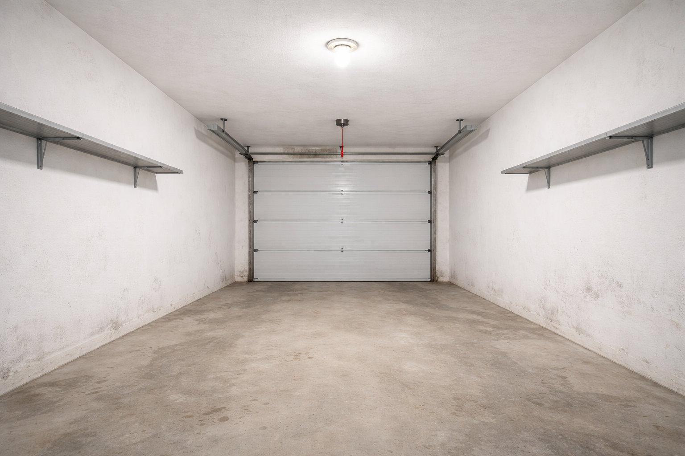

Úklidy a vyklízení
Vyklízíme byty, půdy, sklepy, garáže, volná prostranství, zahrádky v Opavě, Ostravě, Bruntále, Novém Jičíně, Třinci, Karviné a v celém Moravskoslezském kraji.
Provádíme pravidelný svoz věcí do sběrného dvora nebo na skládku. Odvezeme i menší počet nepotřebných věcí.
Vyklízíme zdevastované průmyslové objekty, rodinné domy, chalupy, stodoly, zahrádkářské přístřešky, garáže, vyklízíme byty po nájemnících a jsme schopni je připravit k dalšímu nastěhování.
Cenné věci jako nábytek, elektronika, koberce, nádobí, obrazy atd. od Vás vykoupíme.
V případě zájmu převezeme Vaše věci na nové místo.
Připravíme Vaši nemovitost k následnému užívání nebo prodeji.
Nabízíme vyklízení, úklid a vymalování:
• bytů, bourání bytových jader
• sklepů a sklepních kójí
• rodinných domků
• výrobních prostor
Potřebujete vyklidit panelákový sklep ve kterém se hromadí věci a není v něm již k hnutí? Potřebujete zlikvidovat pozůstalost? Vyklízíme sklepní kóje, vyčistíme je a následně i vymalujeme. Bouráme bytová jádra v panelových domech. Odpad ekologicky zlikvidujeme, odvezeme na skládku.
Poskytujeme široký sortiment úklidových prací pro domácnosti, seniory, podniky a SVJ. Nabízíme vyklízení sklepů, zahrad, garáží, půd a likvidace pozůstalostí. Vše rychle a bez zbytečných průtahů. Bezcenné věci odvezeme na skládku, cenné věci okamžitě vykoupíme. Provádíme i převoz věcí.
Pracujeme v Opavě, Ostravě, Frýdku Místku, Novém Jičíně, Havířově, Třinci a dalších městech Moravskoslezského kraje.
Ceny budou stanoveny dle konkrétních podmínek.
